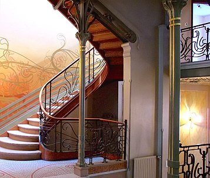
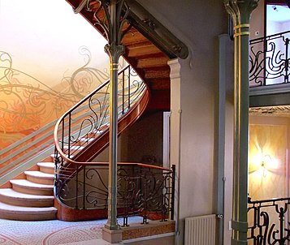
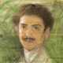
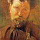
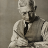
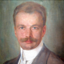
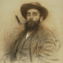

Introducción
 

Modernismo, o en francés Art nouveau, es el término con el que se designa a una corriente de renovación artística desarrollada a finales del siglo xix y principios del xx, durante el periodo denominado fin de siècle y belle époque.
Todas estas denominaciones hacen referencia a la intención de crear un arte nuevo, joven, libre y moderno, que representara una ruptura con los estilos dominantes en la época, tanto los de tradición academicista (el historicismo o el eclecticismo) como los rupturistas (realismo o impresionismo). En la estética nueva que se trató de crear, predominaba la inspiración en la naturaleza a la vez que se incorporaban novedades derivadas de la revolución industrial, como el acero y el cristal, superando la pobre estética de la arquitectura del hierro de mediados del siglo xix.
El modernismo no solo se dio en las artes tales como la pintura, escultura y arquitectura, sino también las artes aplicadas o decorativas, en las artes gráficas y en el diseño de mobiliario, rejería, joyería, cristalería, cerámica y azulejería, lámparas y todo tipo de objetos útiles en la vida cotidiana, incluido el mobiliario urbano, que pasó a tener gran importancia (kioscos, estaciones de metro, farolas, bancos, papeleras, urinarios1). Muchos artistas identificados con el modernismo son artistas «integrales». Especialmente, en el caso de los arquitectos, no solo proyectaban edificios, sino que intervenían en el diseño de la decoración, el mobiliario, y todo tipo de complementos y enseres de uso diario que habían de contener.
Artistas
-
Antoni Gaudí, Barcelona, 1852-1926
-
Felice Casorati, Italia, 1883-1963
-
Alfons Mucha, República Checa, 1860-1939
-
Sydney Long, Australia, 1871-1955
-
Robert Auer, Australia, 1873-1952
-
Ramón Casas, España, 1866-1932